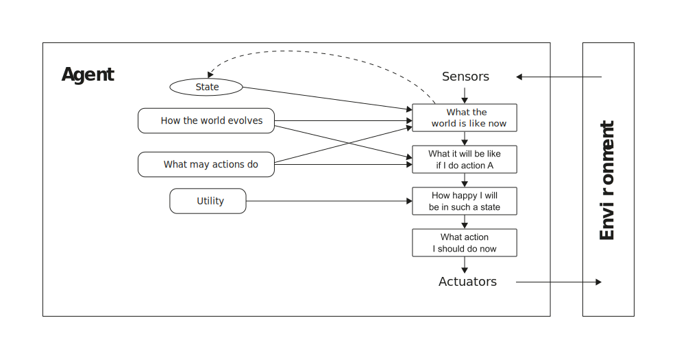
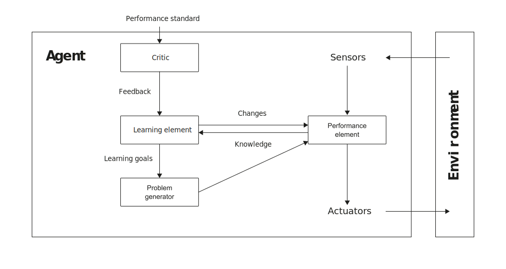

Intelligent Agents
ü߆ I2AI_1 ‚Äî Introduction to AI
Agents
Agent

An agent is anything that can be viewed as perceiving its environment through sensors and acting upon that environment through actuators.
- The term percept refers to the content an agent’s sensors are perceiving
- An agent’s percept sequence is the complete history of everything the agent has ever perceived
- The agent function maps any given percept sequence to an action (an abstract mathematical description)
- The agent function for an AI agent will be implemented by an agent program (a concrete implementation, running within some physical system)
To illustrate these ideas Russel and Norvig (2022, 55) use a simple example—the vacuum-cleaner world, which consists of a robotic vacuum-cleaning agent in a world consisting of squares that can be either dirty or clean. The vacuum agent perceives which square it is in and whether there is dirt in the square. The agent starts in square A. The available actions are to move to the right, move to the left, suck up the dirt, or do nothing. One very simple agent function is the following: if the current square is dirty, then suck; otherwise, move to the other square.
According to Russel and Norvig (2022, 56), all areas of engineering can be seen as designing artifacts that interact with the world. AI operates at the most interesting end to the spectrum, where the artifacts have significant computational resources and the task environment requires nontrivial decision making.
Rational agent
A rational agent is one that does the right thing.
For each possible percept sequence, a rational agent should select an action that is expected to maximize its performance measure, given the evidence provided by the percept sequence and whatever built-in knowledge the agent has (Russel and Norvig 2022, 58).
What is rational at any given time depends on four things:
- The performance measure that defines the criterion of success
- The agent’s prior knowledge of the environment
- The actions that the agent can performance
- The agent’s percept sequence to date
Under following circumstances, the vacuum cleaning agent is rational:
- The performance measure of the vacuum cleaner might award one point for each clean square at each time step, over a “lifetime” of 1,000 time steps (to prevent the cleaner to oscillate needlessly back and forth)
- The “geography” of the environment is known a priori but the dirt distribution and the initial location of the agent are not. Clean squares stay clean and sucking cleans the current square. The Right and Left actions move the agent one square except when this would take the agent outside the environment in which case the agent remains where it is
- The only available action is Right, Left, and Suck
- The agent correctly perceives its location and wether that location contains dirt
(For details such as tabulated agent functions please see Russel and Norvig (2022))
It can be quite hard to formulate a performance measure correctly, however:
If we use, to achieve our purposes, a mechanical agency with those operation we cannot interfere once we have started it […] we had better be quite sure that the purpose built into the machine is the purpose which we really desire (Wiener 1960, 1358)
Rationality
Rationality is not the same as perfection.
- Rationality maximizes expected performance
- Perfection maximizes actual performance
- Perfection requires omniscience
- Rational choice depends only on the percept sequence to date
As the environment is usually not completely known a priori and completely predictable (or stable), information gathering and learning are important parts of rationality (Russel and Norvig 2022, 59).
The vacuum cleaner needs to explore an initially unknown environment (i.e., exploration) to maximize its expected performance. In addition, a vacuum cleaner that learns to predict where and when additional dirt will appear will do better than one that does not.
Environments
Components
Before designing an agent (the solution), the task environment (the problem) must be specified as fully as possible, including
- the performance measure (P),
- the environment (E),
- the actuators (A), and
- the sensors (S)
Russel and Norvig (2022) call the task environment PEAS.
Task environment of a taxi driver agent
- P: Safe, fast, legal, comfortable, maximize profits, minimize impact on other road users
- E: Roads, other road users, police, pedestrians, customers, weather
- A: Steering, accelerator, brake, signal horn, display, speech
- S: Cameras, radar, speedometer, GPS, engine, sensors, accelerometer, microphones, touchscreen
Source: Russel and Norvig (2022, 61)
Properties
Task environments can be categorized along following dimensions (Russel and Norvig 2022, 62–64):
- Fully observable vs. partially observable
- Single agent vs. multi-agent
- Deterministic vs. nondeterministic
- Episodic vs. sequential
- Static vs. dynamic
- Discrete vs. continuous
If an agent’s sensors give it access to the full state of the environment at any point in time, then we say that the task environment is fully observable (e.g., image analysis).
When multiple agents intend to maximize a performance measure that depends on the behavior of other agents, we say the environment is multi-agent (e.g., chess).
When the environment is completely determined by the current state and the actions performed by the agent(s), it is called a deterministic environment (e.g., crossword puzzle). When a model of the environment explicitly uses probabilities, it is called a stochastic environment (e.g., poker).
If an agent’s experience is divided into atomic episodes in which the agent receives a perception and then performs a single action, and if the next episode does not depend on the actions performed in the previous episodes, then we say that the task environment is episodic (e.g., image analysis).
If the environment changes while an agent is deliberating, then the environment is dynamic (e.g., taxi driving).
If the environment has a finite number of different states, we speak of discrete environments (e.g., chess).
Source: Russel and Norvig (2022), p.62-64
The hardest case is partially observable, multi-agent, nondeterministic, sequential, dynamic, and continuous.
Agent types
Simple reflex agents

Rectangles are used to denote the current internal state of the agent’s decision process, rectangles with rounded corners to represent the background information used in the process.
Simple reflex agents select actions on the basis of the current percept, ignoring the rest of the percept history. Thus, these agents work only if the correct decision can be made on the basis of just the current percept. The environment needs to be fully observable (Russel and Norvig 2022, 68).
Model-based reflex agents

Model-based reflex agents use transition models and sensor models to keep track of the state of the world as perceived by the sensors (i.e., internal state). (Russel and Norvig 2022, 70).
The transition model reflects “how the world works,” i.e., how the world evolves (a) independently of the agent and (b) depending on the agent’s actions.
The sensor model reflects how the state of the world is reflected in the agent’s percepts (i.e., by its sensors)
Goal-based agents

A model-based, goal-based agent keeps track of the world state as well as a set of goals it is trying to achieve. Such an agent chooses an action that will (eventually) lead to the achievement of its goals (Russel and Norvig 2022, 72).
Utility-based agents

A model-based, utility-based agent uses a model of the world, along with a utility function that measures its preferences among states of the world. It chooses the action that leads to the best expected utility, where expected utility is computed by averaging over all possible states, weighted by the probability of the outcome (Russel and Norvig 2022, 73).
The utility function is essentially an internalization of the performance measure.
A utility-based agent has many advantages in terms of flexibility and learning.
- When there are conflicting goals, the utility function specifies the appropriate tradeoff.
- Likelihood of success (i.e., goal achievement) can be weighed against the importance of the goals
Learning agents

✏️ Exercises
I2AI_2 E1
Characterize the environment (PEAS and task environment properties) for following agent types:
- Medical diagnosis system
- Part-picking robot
- Interactive English tutor